Kỹ nghệ hệ thống Trí tuệ nhân tạo
Bài 1a: Giới thiệu
Hệ thống phần mềm
Trường ĐH Công nghệ – Đại học Quốc gia Hà Nội
Nội dung
- Giới thiệu học phần
- Sự phát triển của phần mềm
- Thiết kế phần mềm là gì?
- Tài liệu mô tả thiết kế phần mềm (SDD)
- Công cụ viết tài liệu
Lộ trình bài học
0
1
2
3
4
Giới thiệu
"Học gì trong học
phần?"
bài giảng · chính sách · tài nguyên
Phát triển PM
"Phần mềm thay
đổi thế nào?"
AI-assisted · LLM · Copilot
Thiết kế
"Thiết kế là
gì?"
Định nghĩa · So sánh nội thất
Tài liệu SDD
"Ghi lại thiết
kế thế nào?"
IEEE 1016 · Glossary · Viewpoints
Công cụ
"Viết tài liệu
bằng gì?"
LaTeX · Markdown · UML
0.
Giới thiệu
học phần
Giới thiệu chung
- Các bài giảng trong học phần này chỉ mang tính tổng quan, không đi sâu vào chi tiết
- Không thay thế Wikipedia hoặc sách
- Không phải lúc nào cũng chính xác
- Chi tiết nằm trong các ví dụ, bài tập và dự án kèm theo
Các bài giảng (1/2)
- README vs. IEEE
Kỹ nghệ yêu cầu (Requirements Engineering)
RUP vs. Agile/XP - OOAD + Nguyên tắc và Mùi thiết kế
Tư duy hướng đối tượng (Object Thinking) + DDD - Mẫu thiết kế (Patterns), Phản mẫu (Anti-Patterns)
Cải tiến mã (Refactoring) - XML và JSON
Ngôn ngữ mô hình hóa thống nhất (UML)
Các bài giảng (2/2)
- Thiết kế dữ liệu
- Thiết kế cho phân phối liên tục
Microservices, APIs, RESTful
Thiết kế Serverless trên Cloud - Phát triển dựa trên Kiểm thử (TDD)
Phản mẫu kiểm thử (Test Anti-Patterns) - Liên kết & Kết hợp và các chỉ số khác
Tương lai của thiết kế phần mềm
Chính sách và quy định
- Điểm danh: thông qua quiz trên portal, theo quy chế của trường
Điểm thành phần
10%
Điểm giữa kì
30%
Bài tập lớn / Vấn đáp
60%
Tài nguyên
Sách tham khảo:
- Elegant Objects, Code Ahead (Yegor Bugayenko)
- Refactoring, UML (Martin Fowler)
- Clean Code, Agile (Robert C. Martin)
1.
Sự phát triển
của phần mềm
Sự phát triển của phần mềm
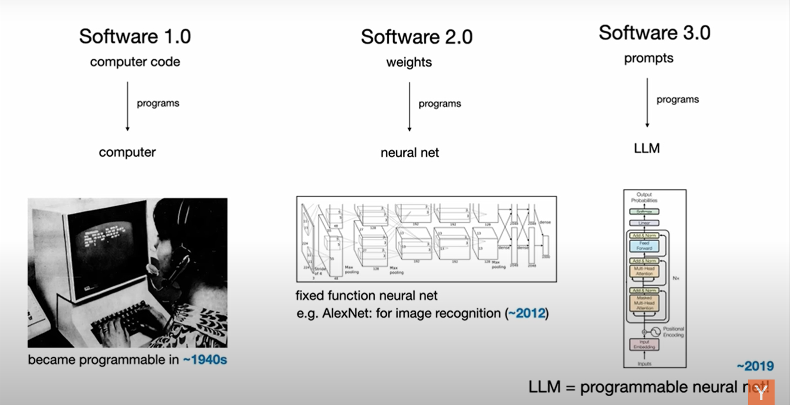
Sự phát triển của phần mềm
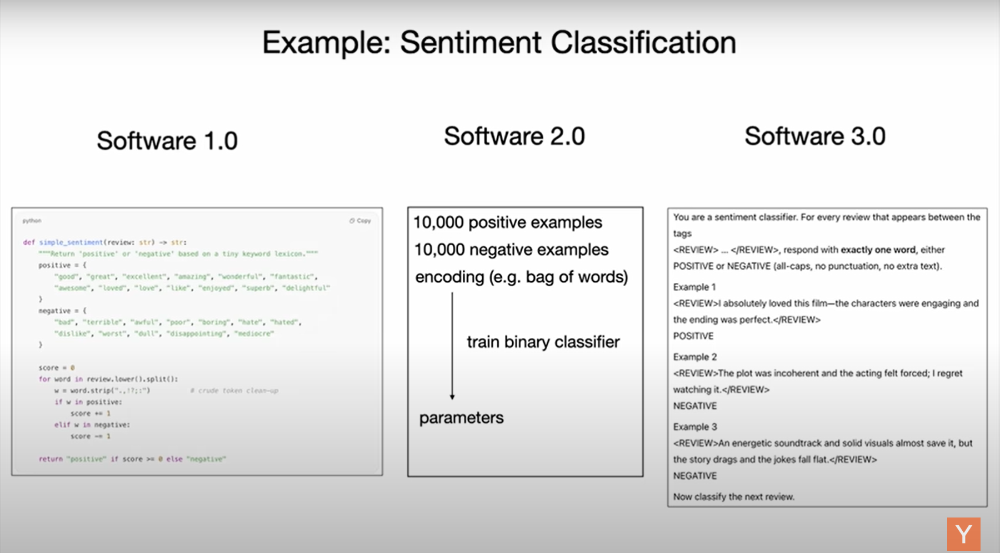
Sự phát triển của phần mềm
Ví dụ: hệ thống nhà thông minh — cách tiếp cận truyền thống
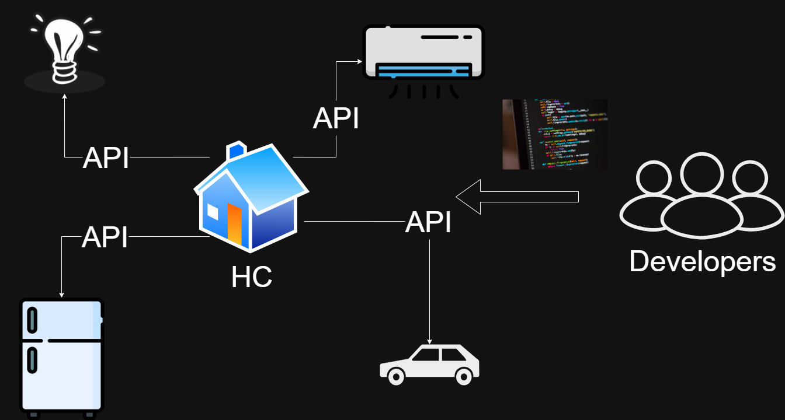
Sự phát triển của phần mềm
Ví dụ: hệ thống nhà thông minh — với LLM
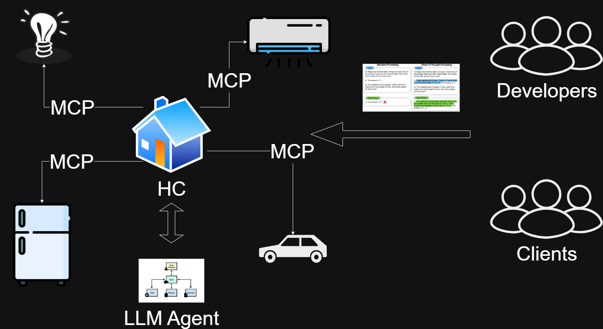
2.
Thiết kế
phần mềm là gì?
Thiết kế (Design)
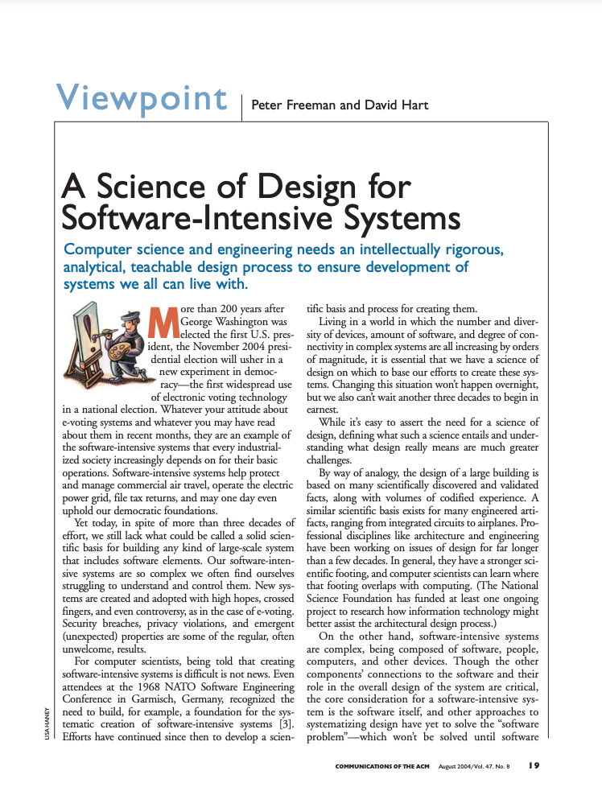
Định nghĩa
Design encompasses all the activities involved in conceptualizing, framing,
implementing, commissioning, and ultimately modifying complex systems—not
just the activity following requirements specification and before programming.Peter Freeman and David Hart, Communications of the ACM, vol. 47, no. 8, 2004
Thiết kế (Design)
Định nghĩa
Thiết kế bao gồm tất cả các hoạt động liên quan đến khái niệm hóa, định hình,
triển khai, đưa vào vận hành và cuối cùng là điều chỉnh các hệ thống phức
tạp — không chỉ là hoạt động diễn ra sau khi đặc tả yêu cầu và trước khi lập trình.Peter Freeman và David Hart, Communications of the ACM, tập 47, số 8, 2004
So sánh: Nội thất và Phần mềm
Giải thích & Thiết kế
3.
Tài liệu mô tả
thiết kế phần mềm
Tài liệu
Một tài liệu tốt là tiền đề cho một thiết kế tốt.
Mô tả thiết kế phần mềm (SDD) theo IEEE 1016
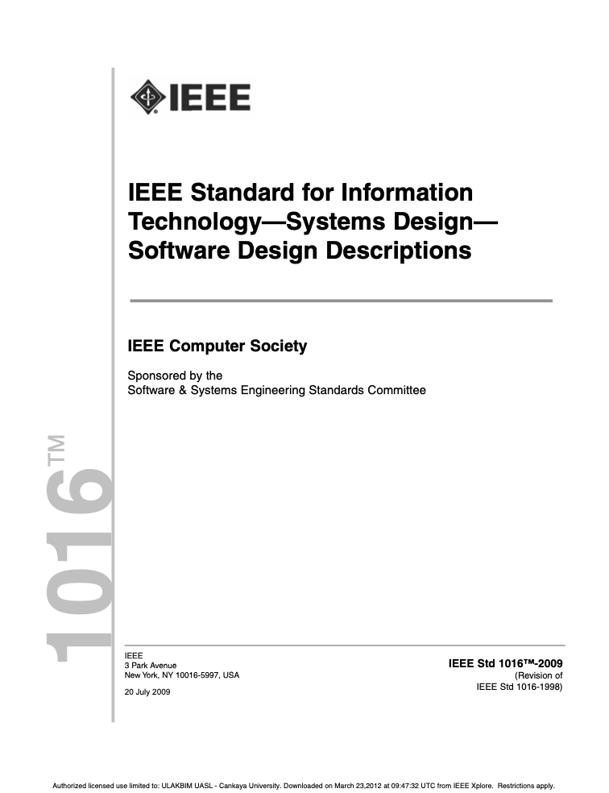
Định nghĩa
Một SDD (Software Design Description) là biểu diễn của thiết kế phần mềm nhằm ghi lại thông tin thiết
kế và truyền tải thông tin đó đến các bên liên quan. Tiêu chuẩn này được sử dụng trong các tình huống
thiết kế yêu cầu phải chuẩn bị SDD rõ ràng.IEEE 1016-2009: Tiêu chuẩn IEEE về Công nghệ Thông tin—Thiết kế Hệ thống—Mô tả Thiết kế Phần mềm
Các tài liệu trong SDD
- Từ điển thuật ngữ (Glossary)
- Ngôn ngữ thiết kế (Languages)
- Các bên liên quan (Stakeholders)
- Các mối quan tâm (Concerns) — Yêu cầu: Chức năng (Functional) & Phi chức năng (Non-functional)
- Các lát cắt (Viewpoints)
- Các thành phần (Elements)
- Lý do cho các quyết định thiết kế (Rationale)
Từ điển thuật ngữ
Từ điển thuật ngữ
- Yêu cầu (request) là gói dữ liệu gửi từ máy khách đến máy chủ.
- Máy khách (client) là máy tính có trình duyệt web.
- Máy chủ (server) là máy tính có phần mềm cài đặt.
Nếu bạn không hiểu, đó là lỗi của tôi!
Ngôn ngữ thiết kế
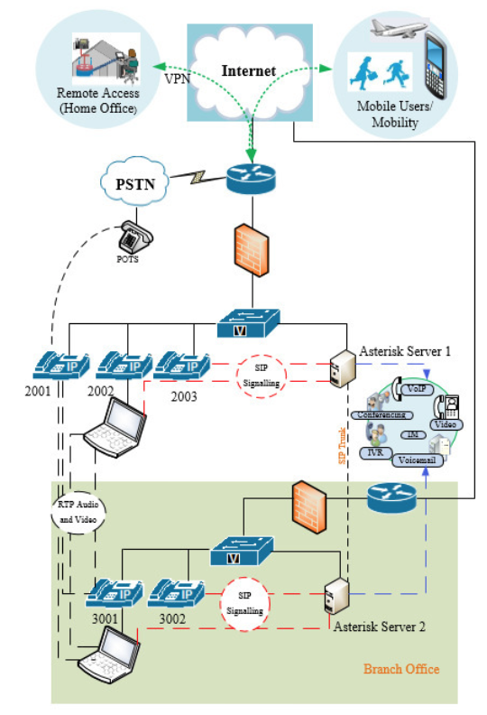
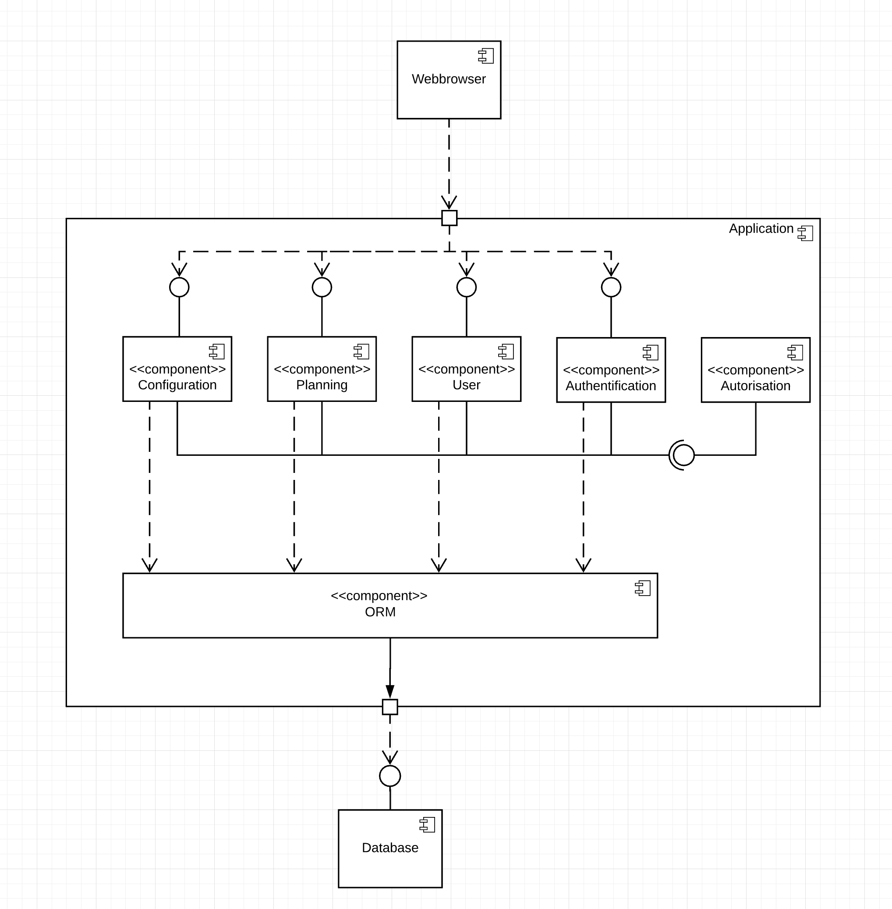
Các bên liên quan
Định nghĩa
Xác định các bên liên quan là quá trình xác định những người, nhóm hoặc tổ chức có thể
ảnh hưởng hoặc bị ảnh hưởng bởi quyết định, hoạt động hoặc kết quả của
dự án.
Các mối quan tâm
Yêu cầu:
- Chức năng (Functional)
- Phi chức năng (Non-functional)
Các lát cắt (Viewpoints)
Một lát cắt là một cách nhìn vào hệ thống từ một góc độ cụ thể, mô tả một số khía cạnh của hệ thống và
cung cấp thông tin cần thiết cho một số bên liên quan.
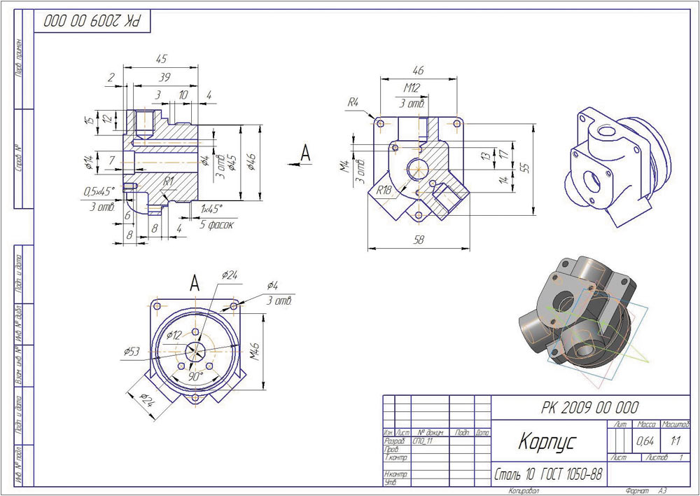
Các thành phần (Elements)
Ví dụ
- Mô-đun
- Hành vi
- Dữ liệu
- Giao diện
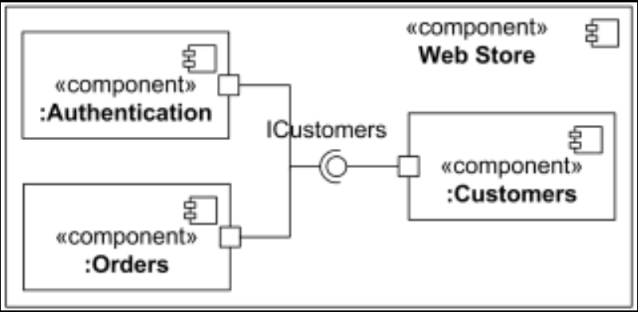
Lý do cho các quyết định thiết kế
Lý do
- Lý do chọn mô-đun A thay vì mô-đun B
- Lý do chọn giao diện A thay vì giao diện B
- Lý do chọn cơ sở dữ liệu A thay vì cơ sở dữ liệu B
- Lý do chọn công nghệ A thay vì công nghệ B
- Lý do chọn mẫu thiết kế A thay vì mẫu thiết kế B
Lý do cho các quyết định thiết kế
Công cụ
- Quyết định đa tiêu chí (Multi-Criteria Decision Making, MCDM)
- Phân tích lựa chọn thiết kế (Architecture Trade-off Analysis Method, ATAM)
- Bảng quyết định (Decision Table)
- Phân tích nhiều yếu tố (Multi Factor Analysis)
- Ma trận quyết định (Decision Matrix)
Không cần tin tôi, hãy tin quyết định của tôi !!!
4.
Công cụ
viết tài liệu
Công cụ viết tài liệu
- LaTeX
- Markdown (Notion, GitHub)
- Visual Paradigm
- UML
- UI Mockups
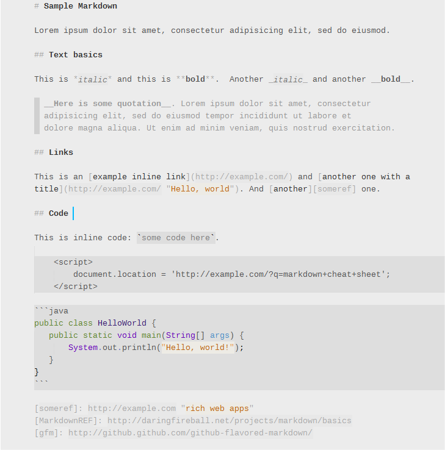
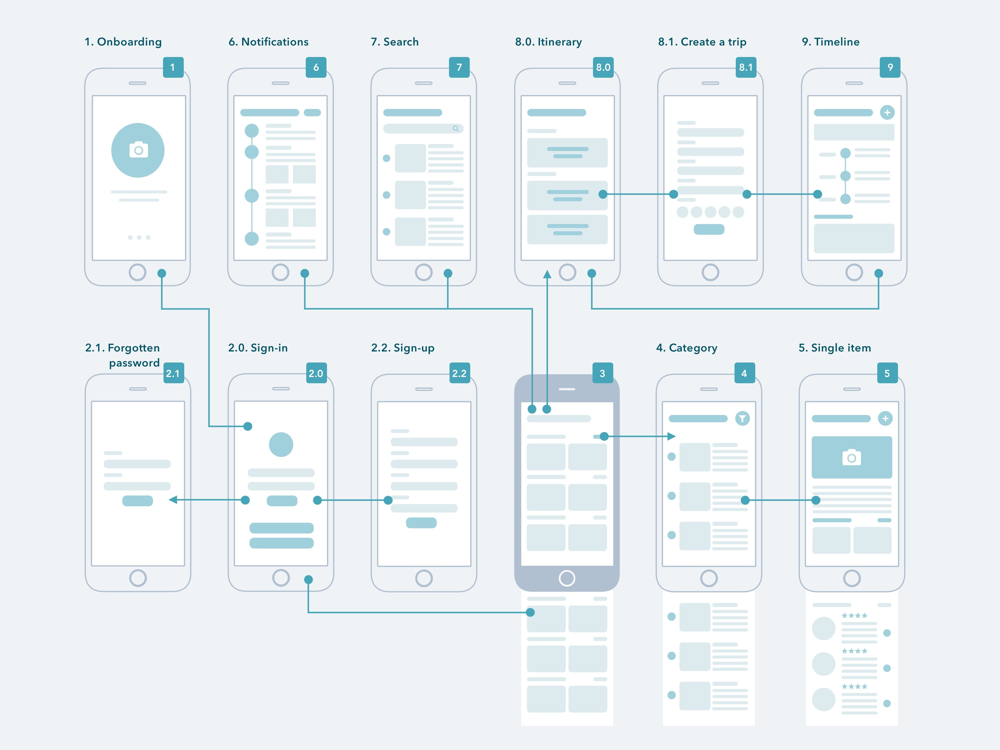